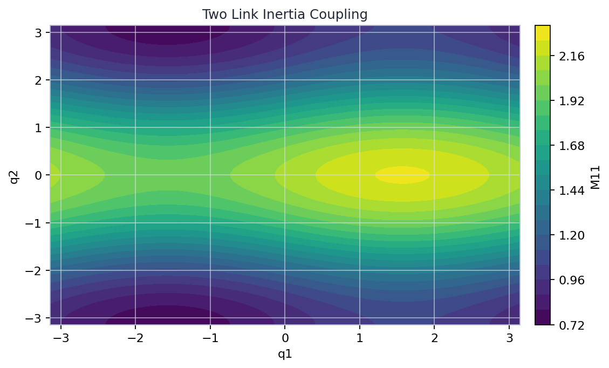
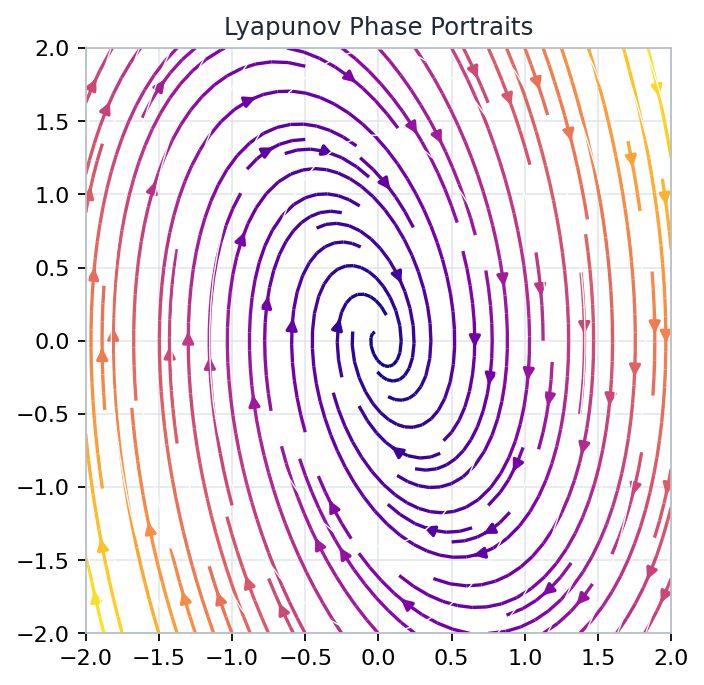
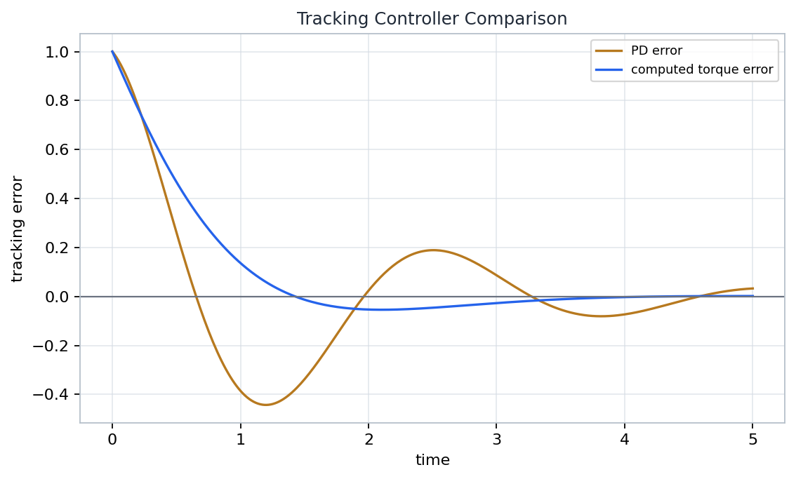

Chapter 04
Robot Dynamics Adds Energy To Kinematics
How do energy, inertia, and feedback turn a kinematic chain into a controlled mechanical system?
Kinematics Gives Coordinates Joint variables still describe where the mechanism is, but now their rates carry kinetic energy and momentum.
Dynamics Gives Forces Lagrange and Newton-Euler calculations convert energy bookkeeping into generalized torques.
Control Gives A Proof Obligation A controller is acceptable only when the closed-loop energy or error function has the right sign behavior.
$$q,\dot q,\ddot q \quad \longmapsto \quad M(q)\ddot q + C(q,\dot q)\dot q + N(q,\dot q) = \tau$$
Source grounding: Chapter 04, printed pages 155-210; PDF pages 173-228. Notebook: A-Mathematical-Introduction-to-Robotic-Manipulation/part-01-foundations-and-single-robot-manipulation/chapter-04-robot-dynamics-and-control/04-robot-dynamics-and-control.ipynb
Open by connecting this chapter to the previous kinematics material. The robot has not acquired a new configuration space; the difference is that motion now has energy, momentum, and required actuation. Tell students that the lecture will keep one through-line: every dynamics formula is a map from coordinates and velocities to forces, and every controller must respect that map rather than merely draw a plausible trajectory.
Generalized Coordinates Replace Particle Bookkeeping Reduction
particle view
x1, x2, ..., xk with constraints
coordinate view
q1
q2
q in R^n
$$x_i = x_i(q), \qquad \dot x_i = J_i(q)\dot q$$
Why Coordinates Matter Rigid constraints are already solved by choosing joint variables. The dynamics should not reintroduce every particle position as an independent unknown.
Teaching Check Ask whether each force has been converted into a generalized force before it is added to a joint equation.
Source grounding: generalized-coordinate setup for dynamics in Chapter 04, printed pages 155-210.
The first conceptual move is reduction. A robot link contains many mass elements, but the mechanism constraints mean that a short vector of joint variables determines their positions. Emphasize that this is not a numerical convenience; it is the geometric reason Lagrange's equations are compact. The Jacobian for each mass element is the bridge from joint rates to physical velocities, which is why Jacobians keep reappearing in dynamics.
Lagrange's Equations Are The Energy-To-Force Map Variational form
$$L(q,\dot q)=K(q,\dot q)-P(q)$$
$$\frac{d}{dt}\frac{\partial L}{\partial \dot q_i}-\frac{\partial L}{\partial q_i}=\tau_i$$
Lagrange's equations ask how the scalar energy description changes when one generalized coordinate is varied.
Kinetic energy
K(q, qdot)
Potential
P(q)
L = K - P
one scalar function
generalized torque tau
Source grounding: Lagrangian robot dynamics, Chapter 04, printed pages 155-210; PDF pages 173-228.
Present Lagrange's equations as an energy-to-force converter. Students often see the formula as a formal derivative recipe, but the useful interpretation is that the kinetic and potential energy functions already encode the constraints and coordinates. The output is not a Cartesian force on one particle; it is a generalized force paired with the chosen coordinate. This pairing will matter later when controllers inject torques.
Rigid-Link Inertia Is A Metric On Velocity Mass matrix
qdot1
qdot2
high inertia direction
low inertia direction
level sets of kinetic energy
$$K=\frac{1}{2}\dot q^T M(q)\dot q$$
Metric Interpretation The inertia matrix measures the cost of a joint velocity. Its ellipses tilt and stretch as configuration changes.
Notebook Sanity inertia_symmetric_error = 0.0
Artifact grounding: checks/final-sanity.json and Chapter 04 inertia discussion.
Use the word metric deliberately. The inertia matrix is not merely a coefficient table; it defines a positive-definite quadratic form on velocity at each configuration. That is why symmetry and positive eigenvalues are not optional implementation details. The notebook sanity values confirm both properties for the sampled two-link matrix, and the ellipsoid gives students a visual way to remember what those checks mean.
Two-Link Coupling Is Configuration Dependent 2R diagnostic

Generated chapter artifact: two-link-inertia-coupling.png. Inspection target: configuration-dependent inertia.
$$M(q)=\begin{bmatrix}M_{11}(q)&M_{12}(q)\\M_{21}(q)&M_{22}(q)\end{bmatrix},\qquad M=M^T\succ0$$
Coupling Reading Off-diagonal entries say that accelerating one joint can require torque at the other. The amount changes with arm shape.
Shape Check coriolis_shape = [2, 2]
A two-joint velocity coupling term should have a two-by-two diagnostic shape.
Artifact grounding: figures/two-link-inertia-coupling.png and checks/final-sanity.json.
Make the two-link example carry the abstract idea. The heatmap is not about a special numerical model; it shows that inertia coupling is configuration dependent. When the elbow angle changes, mass distribution relative to the joints changes, so the same joint acceleration can demand a different torque pattern. The Coriolis shape check reinforces that the velocity coupling term must match the two generalized coordinates before any controller can use it.
Newton-Euler Explains Frame Discipline Recursive balance
Forward Pass Propagate angular velocity, linear velocity, and acceleration from base to tool.
Backward Pass Propagate forces and moments from the tool back to the actuated joints.
Frame Rule Every spatial velocity, acceleration, and wrench must be expressed in the frame expected by the recursion.
link 1
link 2
link 3
tool
velocities and accelerations
forces and moments
Source grounding: Newton-Euler dynamics and frame conventions in Chapter 04.
This slide explains why the chapter keeps returning to frames. Newton-Euler dynamics is physically intuitive because it balances velocities, accelerations, forces, and moments link by link. But the recursion is unforgiving: a wrench written in the tool frame cannot simply be inserted into a base-frame balance. Emphasize that frame discipline is not cosmetic notation; it is what allows local link balances to assemble into correct joint torques.
Open-Chain Inertia Assembles From Link Jacobians Energy pipeline
$$V_i = J_i(q)\dot q$$
$$K=\frac{1}{2}\sum_i V_i^T G_i V_i$$
$$M(q)=\sum_i J_i(q)^T G_i J_i(q)$$
qdot
joint rates
J1(q) qdot
J2(q) qdot
Jn(q) qdot
sum link
energies
one M(q)
Source grounding: open-chain inertia assembly from link velocities and spatial inertias, Chapter 04.
This is the cleanest way to see open-chain dynamics without drowning in indices. Each link has a Jacobian that maps the same joint-rate vector into that link's spatial velocity. Each link also has its own spatial inertia. Summing the quadratic energies produces a single joint-space mass matrix. The formula is worth reading aloud because it explains why kinematic Jacobians are not left behind when the lecture turns to dynamics.
The Manipulator Equation Has Four Terms Model surface
$$\underbrace{M(q)\ddot q}_{\text{inertia}}+\underbrace{C(q,\dot q)\dot q}_{\text{velocity coupling}}+\underbrace{N(q,\dot q)}_{\text{potential and other loads}}=\underbrace{\tau}_{\text{generalized input}}$$
1. Inertia Acceleration is filtered through a configuration-dependent positive-definite matrix.
2. Velocity Coupling Centrifugal and Coriolis terms appear when the inertia metric changes along motion.
3. Loads Gravity, springs, and modeled nonconservative effects enter as generalized forces.
4. Input The actuator torque is the quantity a joint-space controller directly chooses.
Source grounding: manipulator equation, Chapter 04, printed pages 155-210.
Name the four terms as a control interface. Inertia, velocity coupling, loads, and input are not independent decorations; together they define what the controller must cancel, shape, or respect. Students should notice that the equation is already in generalized coordinates. That means the input torque is paired with virtual joint displacement, while Cartesian forces require a Jacobian transpose before they belong in this equation.
Structural Lemma Powers Control Proofs Skew symmetry
$$M(q)=M(q)^T\succ0$$
$$\dot M(q)-2C(q,\dot q)\quad\text{is skew-symmetric}$$
$$\dot q^T\big(\dot M-2C\big)\dot q=0$$
differentiate kinetic energy
troublesome qdot terms appear
skew part contributes zero power
!
0
Source grounding: structural properties of robot dynamics used in Chapter 04 control proofs.
This lemma is the hinge between modeling and proof. Without structure, the derivative of kinetic energy would contain many velocity-dependent terms that are hard to sign. The skew-symmetry property says those terms do no net power when paired with the same velocity vector. In class, stress that the lemma is not a numerical coincidence of the two-link example; it is a consequence of the way the Coriolis matrix is chosen for the manipulator dynamics.
POE Dynamics Keeps Kinematics In The Loop Same chain, richer map
Forward Kinematics Products of exponentials give link poses and adjoint maps along the chain.
Velocity Kinematics Those same transformations build the spatial or body Jacobian for each link.
Dynamics The link Jacobians and spatial inertias assemble kinetic energy, then the manipulator equation.
POE transforms
g_i(q)
link Jacobians
J_i(q)
spatial inertia
G_i
M(q), C(q,qdot), N
dynamic model in joint coordinates
controller
Source grounding: POE kinematics as the foundation for Chapter 04 dynamics calculations.
This slide keeps the course sequence coherent. The product-of-exponentials machinery from kinematics remains valuable because link poses determine link velocities and their Jacobians. Once each link velocity is known, kinetic energy is a mechanical calculation rather than a new geometric mystery. The point is that dynamics does not replace kinematics; it layers energy and force accounting on top of the same chain description.
Lyapunov Stability Names What Stable Means Definitions
equilibrium
epsilon tube
delta start
stability keeps trajectories nearby; asymptotic stability brings them back
Stable Small initial error implies the trajectory remains inside a prescribed small neighborhood.
Attractive Nearby trajectories converge to the equilibrium as time grows.
Asymptotically Stable Both properties hold: stay close first, then converge.
$$x=0,\qquad \dot x=f(x),\qquad V(x)\ge 0$$
Source grounding: Lyapunov stability definitions in Chapter 04.
Before proving anything, define the target carefully. Stability and convergence are not synonyms. A trajectory can remain near an equilibrium without approaching it, and a careless controller claim may confuse those properties. Use the nested neighborhoods to separate the epsilon-delta part from attraction. This vocabulary is essential because later slides use Lyapunov functions to certify behavior without solving the differential equation explicitly.
Direct Lyapunov Method Converts Motion Into Signs No closed form needed
$$V(x)>0\quad\text{for}\quad x\ne0,\qquad V(0)=0$$
$$\dot V(x)=\nabla V(x)^T f(x)\le0$$
Control Reading Choose feedback so the energy-like quantity cannot increase, then sharpen the sign condition for convergence when possible.
level sets of V
flow crosses inward
minimum
sign of Vdot replaces explicit trajectory solution
Source grounding: direct Lyapunov method in Chapter 04.
The direct method is a change of viewpoint. Instead of solving the motion equation, look for a scalar quantity whose sign behavior is decisive. Positive definiteness says the quantity measures displacement from the goal; a nonpositive derivative says trajectories do not climb its contours. In robot control, kinetic plus potential energy is the natural candidate, but tracking problems often add error terms to build the right Lyapunov function.
Phase Portraits Make Vdot <= 0 Inspectable Visual sign test

Generated chapter artifact: lyapunov-phase-portraits.png. Inspection target: energy level sets and convergence.
$$V(e,\dot e)=\frac{1}{2}\dot e^T M\dot e+\frac{1}{2}e^T K_p e$$
$$\dot V\le0$$
Notebook Sanity lyapunov_max_vdot = -0.001775147928994053
The sampled grid is strictly below zero at its largest recorded derivative.
Artifact grounding: figures/lyapunov-phase-portraits.png and checks/final-sanity.json.
Use the phase portrait as a sign inspection tool. The arrows should move across or along energy contours in the direction allowed by the Lyapunov calculation, not outward through higher energy levels. The recorded maximum derivative is negative on the sampled grid, which supports the intended visual reading. Make clear that a grid check is not a theorem by itself; it is evidence that the implemented diagnostic agrees with the analytic inequality being taught.
Computed Torque Linearizes Tracking Error Model cancellation
$$\tau=M(q)\left(\ddot q_d-K_d\dot e-K_p e\right)+C(q,\dot q)\dot q+N(q,\dot q)$$
$$\ddot e+K_d\dot e+K_p e=0$$
Numerical Target final_tracking_error = 3.856330338784407e-08
desired motion
q_d, qdot_d, qddot_d
inverse dynamics
choose tau
nonlinear robot
M, C, N are present
linear error
second order
cancellation is only as good as the model
Artifact grounding: checks/final-sanity.json; source grounding: computed torque in Chapter 04.
Computed torque is attractive because it turns a nonlinear robot model into a familiar linear tracking error equation. But the slide should not oversell it. The controller uses the model directly, so modeling errors, unmodeled loads, or bad parameter estimates show up as imperfect cancellation. The very small final tracking error in the notebook is a diagnostic for the controlled example, not a promise that every real manipulator will behave that cleanly.
PD Control Needs An Energy Proof Damping argument
$$\tau=-K_p(q-q_d)-K_d\dot q+G(q)$$
$$V=\frac{1}{2}\dot q^TM(q)\dot q+\frac{1}{2}(q-q_d)^TK_p(q-q_d)$$
$$\dot V=-\dot q^T K_d\dot q\le0$$
q
q_d
stiffness Kp
damping Kd dissipates
Source grounding: PD plus gravity compensation and Lyapunov proof structure in Chapter 04.
PD control can look too simple after computed torque, so give it its own proof. With gravity compensation and a fixed desired configuration, the proportional term stores artificial potential energy and the derivative term dissipates kinetic energy. The structural lemma lets the derivative collapse to the damping term. The important teaching point is that stability comes from an energy argument, not from hoping that proportional and derivative gains are intuitively reasonable.
Workspace Control Moves The Error Coordinates Task-space dynamics
tangent task error
normal sensitivity
x_d
x(q)
workspace effective inertia
$$\tau=J(q)^TF,\qquad \Lambda(q)=\left(JM^{-1}J^T\right)^{-1}$$
Error Coordinates Move Instead of regulating joint error directly, workspace control regulates task error and maps the resulting wrench back through the Jacobian transpose.

Tracking comparison artifact: computed torque versus PD response.
Artifact grounding: figures/tracking-controller-comparison.png; source grounding: workspace control in Chapter 04.
Workspace control changes the coordinates in which the error is expressed. The desired behavior is described in task space, but the actuators still live at the joints, so the Jacobian transpose and effective inertia matrix become central. Use the tracking comparison only as a reminder that error coordinates matter: a clean joint response and a clean task response are related through the kinematic map, not automatically identical.
Constrained Control Splits Tangent Motion From Normal Force Contact
$$A(q)\dot q=0$$
$$\tau=\tau_{\parallel}+A(q)^T\lambda$$
Power Check Normal constraint forces enforce contact; tangent control moves along the allowable surface. Ideal normal forces do no work on feasible velocities.
tangent motion
normal force
constraint manifold
lambda
contact load
projected
allowable acceleration
Source grounding: constrained control and contact force decomposition in Chapter 04; lab prompt: simulate a two-link tracking task and check energy structure plus error decay.
Close with constrained control because it tests whether students really understand generalized forces. A contact constraint removes motion directions but introduces normal reaction forces. Tangent components should accomplish the commanded motion along the allowable surface, while normal components enforce the constraint and ideally do no work on feasible velocities. This is the same energy discipline as before, now with a decomposition of force directions.